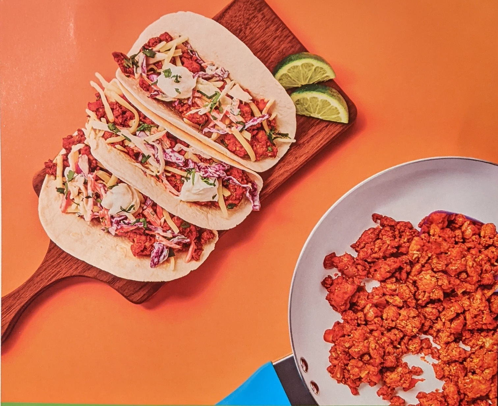

The Recipe
Looking to try a tasty new recipe? The web is a good place to look but be careful out there. It's in vogue for many recipe posters to accompany their instructions with a tale from yester-holiday at grandma's house, or perhaps an inspirational personal story that is also totally irrelevant. Maybe you must read a play by play of the poster's day before you even see the ingredients. These tales can go on and on, leaving you to forget what you came to the website for in the first place. You may wonder why the website moderators allow such ridiculous oversharing and I don't have answer for you. My best guess is that if illogical tangents by recipe posters sell advertising space, then the content of the posting matters not. But there is some good news for you...
This is not one of those websites
Here is the quick and dirty on some tasty junk food pork tacos!
Ingredients
- half of a yellow onion
- 3 oz of tomato paste
- 10 oz of 3-color coleslaw
- 16 oz of ground pork
- 4 tablespoons of mayo(always can add more)
- a quater stick of butter
- cilantro
- 2 limes
- 12+ small flour tortillas(stack them as high as you like, or have some to pass around)
- Sriracha sauce(game changer)
- Sun Chips Garden Salsa(another game changer)
I use a combination of different spices, and all listed below are good options(some images included in Spices link above). The base seasonings I use are Badia, Adobo and a taco seasoning mix. I use paprika, salt, and pepper to enhance the flavor a little more. I encourage you to add whatever else you would like to this spice mix or remove/replace spices at your discretion. Start light and build up to your own unique blend!
- Badia Complete seasoning
- Adobo All Purpose seasoning
- taco seasoning
- paprika
- salt
- pepper
Directions
- Dice onions and finely chop cilantro. Quater limes.
- Heat a quater stick of butter in non-stick pan(medium-high heat, ~6). Cover surface area of pan with melted butter.
- Add pork to the pan, breaking it into smaller chunks. Season pork with your preferred seasoning. Don't forget to wash your hands after handling raw meat.
- While pork cooks add half of the bag of 3-color coleslaw to a 2 quart bowl. I add a little of my base seasoning over the cole slaw mix and some pepper. Add in two tablespoons of mayo and the juice from half a lime. Mix all ingredients together unil coleslaw is fully coated in mayo and has a creamy texture(add more mayo a tablespoon at a time if need). This only makes half of the mix as you can see. I prefer to make it in two parts if I am having leftovers. For more mouths to feed double ingredients and find a bigger bowl!
- Cook pork on medium-high until browned(at least 4 minutes). Add diced onions to the pan with the pork. Reduce heat to medium(~4)
- Cook onions until softened and pork is cooked through(~2-3 more minutes). Reduce heat to medium-low(~3), add some more of the taco seasoning to this mix.
- Add tomato paste to pork and onion mix. Stir until all ingredients are coated in tomato paste. Turn off heat.
- Heat as many tortillas as you would like in the microwave for 15-30 seconds. Layer the pork mix on the bottom of each tortilla, followed by slaw mix, then crumble a few of your chosen chips over the slaw mix. Finally drizzle srirachi over the top and garnish with cilantro. Enjoy!